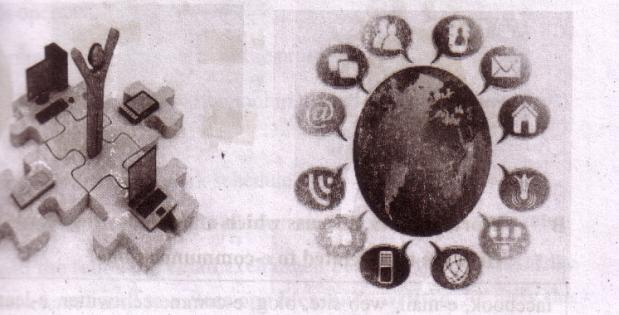
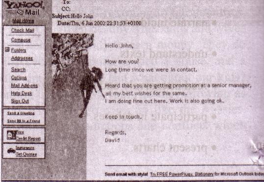
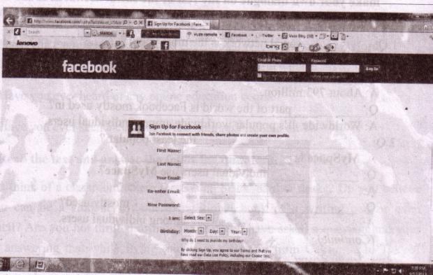

Unit Thirteen
Media and modes of e-communications

After we have studied this unit, we will be able to
-
surf the Internet.
-
read and write emails.
-
narrate incidents in a logical sequence.
-
understand texts.
-
read intensively and extensively
-
participate in debates.
Lesson 1: Media and models of e-communications
A . Look at the pictures and say what you see in them.
B Work in pairs. Discuss which of the following words you are familiar with. How are they related to e-communications?
|
|
|
web site |
blog |
e-commerce |
e-learning |
|
iPod |
tablet pc |
information |
super high way |
social network |
smart phone |
C . Read the text and answer the questions that follow.
Let's imagine a citizen's ordinary day at work. The morning probably starts with a cup of coffee/tea, followed by greeting the colleagues. Then comes the inevitable, which is logging in the computer. For many of us the third step has become an automatic behavior and it dominates the rest of our work day, receiving and sending dozens of emails.

An e-mail is an electronic mail. It is a computer-aided way of exchanging digital text messages from a sender to one or multiple recipient/s. Emails operate through a network of computers linked by the Internet. There are commercial server agencies such as Yahoo, Gmail, Ymail, Hotmail, etc. that accept the text message from the sender, forward it and deliver instantly to the digital mailbox of the recipient. If the recipient is not online, the message is stored and delivered later when the recipient is online. It works instantly just with the click of your mouse. It has been a powerful communication tool in modern life.
155Questions
1. What is an email?
2. How do emails operate?
3. How do the commercial servers serve in the process of an email?
4. `It has been a powerful communication tool in modern life.' Explain the statement.
5. How do emails affect our daily work schedule?
D . Work in pairs and discuss the steps of your normal days, weekends, etc.
E . Pair work . Read the following email exchanged between two friends. Like an informal letter, an email to a close one is casually written. Identify the mistakes in the main body of the message, discuss with your partner, and correct them.
S ubject: Details of Dhaka Tour
FROM: Alexa Dowson<alex- dowson@yahoo.com >
T0: Moutushi Laboni< moutushi1997@ymail.com >
Monday, May 21, 2012 6:20 AM
Hi Moutushi!
Thanks for your mail. I'll fly from Ottawa on 7:36 hours local time on 13 July with Qatar Airlines via London-Doha and land Dhaka on 15 July around 13:41hours local Time Wish to stay 2 days in the Cox's Bazar and 1 day in khulna. Return flight on 21 July at 3:04 hours local time.
Keep fine and in touch. Hope to see you soon!
Alexa
156F . Pair work . The email in section E is a reply by Alexa to Moutushi's previous email. Imagine what Moutushi might have written to Alexa. Write that email.
-
F. Read the following text. It gives the information about the origin of the email. Choose the appropriate forms of the verbs from the box to complete the sentences. You can use a verb more than once.
|
send |
say |
use |
remain |
call |
expand |
allow |
develop |
spread |
Sending text messages electronically could be [dash] to date back to the Morse code telegraph of the mid 1800s and the 1939 New York World's Fair, In the fair, IBM [dash] a letter of congratulations from San Francisco to New York on an IBM radio-type, [dash] .it a high-speed substitute for mail service in the world of tomorrow. Tele printers were [dash] in Germany during World War II. The use [dash] until the late 1960s when there was a worldwide Telex network. Additionally, there was the similar American system [dash] TWX which [dash] important until the late 1980s.
With the introduction of MIT's Compatible Time-Sharing System (CTSS) in 1961, for the first time multiple users were [dash] to log into a central system from remote dial-up terminals. They were also able to store and share files on the central disk. Informal methods of using this to pass messages [dash] and were [dash] to create the first true email system.
H . Read the following grid first. Then listen to the CD/teacher and tick the right box in the following grid.
|
Listening text |
Comparison between emails, phone conversations and face to face meetings
157|
- |
time-consuming |
reliable |
efficient | ||||
|
less |
more |
less |
more |
less |
more | ||
|
Emails |
- |
- |
- |
- |
- |
- | |
| Phone conversations |
- |
- |
- |
- |
- |
- | |
|
F2F meetings |
- |
- |
- |
- |
- |
- | |
I . Group work. Arrange a debate in the class on the advantages and the disadvantages of the email.
Lesson 2: Social network services
A . Look at the following logos. Are you familiar with them? Discuss with your partner what they are and how they are related to the field of communications .
B . Read the text and answer the following questions.
The advantages of the Internet technology have made a good number of web sites to emerge to facilitate social relations among people around the world. These are known as social networking services or social networks. At present, Facebook is the most popular. Google+, Twitter, LinkedIn, etc. are other frequently used social services. Social network services are web-based and hence, provide ways for the users to interact through the Internet. These services make it possible to connect people sharing interests and activities across the borders and thus have made a lot for the users to feel that they really live in a global village.
Why are social networks expanding so fast? The answer is simple. Most of the social services are cost-free. You can make use of them free, paying a very little to your Internet service provider. Secondly, you can make your personal profile public before the entire online community. It is like presenting yourself before the entire world. You can also look into other people's profile if you are interested. It is simple and easy. Thirdly, social networks allow users to upload pictures, multimedia contents and modify the profile. Some services like Facebook allow users to update their profiles. Fourthly, networks allow users to post blog entries. User profiles have a section dedicated to comments from friends and other users. Finally, there are privacy protection measures too. A user himself or herself decides over the number of visitors/viewers, and what information should be shared with others.
158Questions
1. What do you mean by social networks?
2. What are some uses of social networks?
3. 'These services ... have made a lot for the users to feel that they really live in a global village'. Do you agree with this view? Why/ Why not?
4. Make a list of the arguments as to why social networks are expanding so fast. What's your view regarding them?
C . Read the second paragraph of the text in section B again. Notice the words in italics and write how they work in maintaining logical sequence in the paragraph.
D . Choose the best answers.
`
1. The [dash] technology has made social networking sites to emerge.
a . LinkedIn
b . Google+
c. Internet
d . Twitter
2. Users have to pay for
a . social networks.
b. their online connections.
c . multimedia contents.
d. uploading pictures.
3. User accounts have [dash] protection measures.
a. virus
b. identity
c . personal secrecy
d. network
4. User profiles have a section for
a. others' remarks.
b. outsider's editing.
c. outsider's moderation.
d. outsider's uploading.
159-
E. Fill in the follow ing dialogue box to open a Face book account.

F . Look at the following table adapted from Wikipedia. It shows some data on worldwide use of social networks.
|
Social Networks |
Individual users | Percentage (%)of popularity |
Regions covered |
|
|
792,999,000, |
55.1 % |
worldwide |
|
Google+ |
250,000,000 |
17.7% |
worldwide |
|
|
167,903,000 |
11.7% |
worldwide |
|
|
94,823,000 |
6.6% |
Asia and Europe. |
|
MySpaee |
61,037,000 |
4.2% |
USA and Canada |
|
Others |
255,539,000 |
17.8% | |
|
Total |
1,438,877,000 |
100% |
Now complete the following dialogues about Facebook and MySpace, and make your own dialogue on the rest of the social networks in the table. Act them out in pairs.
1 Q: [dash] social network is the most popular ?
A: Facebook is [dash]
Q: [dash] individual users use Facebook?
A: About 793 million.
Q: [dash] part of the world is Facebook mostly used in?
A: Worldwide. It's popular worldwide among individual users.
2 Q: [dash] the least popular ?
A : MySpace is [dash]
Q: [dash] individual users use MySpace?
A: [dash]
Q: [dash] mostly used?
A: [dash] among individual users.
(Continue)
3 – 4- 5-
Lesson 3: E-learning
A . Look at the following picture. Do you recognize it? Discuss with your partner and say what it is.
161B. Work in pairs. Discuss the following questions.
-
Have you ever experienced any digital education programmes in multimedia or CD/DVD?
-
Have you ever used any digitized educational resources such as Oxford Dictionary, Banglapdedia and IELTS/TOEFL practice materials?
-
Have you ever heard of any online education course?
-
Have you ever seen a classroom teaching programme on TV?
C . Read the text and answer the following questions.
Can you think of a classroom where there is no blackboard or desks? Do you believe that you can be a student without a traditional book or a writing pad or even pen/pencil? Are you not thrilled to imagine that you have asked a question and your tutor is answering that while flying midair in a Boeing from California to Tokyo? These are all possible in a `virtual campus' in the system of e-learning. No kidding! For quite a long time, educationists have been utilizing the advantages of computer technology. The social networking services have a huge potential to help educationists in this sector. They have access to millions of people worldwide. Educationists have noticed that a large number of social network users come from young generation and especially belong to student community. So side by side with computer assisted teaching-learning software, online education programmes are evolving fairly rapidly to assist conventional education system.is that e-learning?
We may confuse distant education or computer-based learning or computer-assisted training or even online education programmes with e-learning. But we should be cautious about the mix-up. What happens in an online education programme? Maybe you get some materials online from your tutor. Maybe you submit your assignment through email. Or even you may take your test online. But there must be some conventional campus, a department/institute from where your certificate will come. But in e-learning, as said by global e-learning guru Dr Badrul H Khan*, every step such as, registration, admission, classroom entry and exit, class work, attendance, discussion with course mates, feedback, exams and finally certification must take place electronically through computer and the Internet technology in a virtual campus.
162Everything is digitized and conducted by a system called Learning Management System (LMS). So online education programmes blend various components of e-learning.
The revolutionary concept of e-learning is already in its practice phase in many parts of the world. Professor Khan has developed a framework and important literatures on e-learning which have been praised by pundits worldwide including Bangladesh. Professor Khan is especially enthusiastic about the prospect of e-learning in Bangladesh.
How would you feel if Bangladesh contemplates establishing South Asia's first virtual university? Won't it be a pioneering step for us in the world of e-learning? Let's keep our fingers crossed.
*Born and graduated in Bangladesh, Dr Badrul H Khan was a professor at George Washington University and the University of Texas, USA. He is one of the celebrated theorists in the field of e-learning.
D . Write an email to your teacher expressing your feelings and opinion regarding the next mode of education -- e-learning. Also ask your teacher to clarify if anything in the text is unclear to you.
E . Suppose Badrul Huda Khan has come to visit your school and intended to meet students for a presentation on e-learning. Write a text message to invite your friend to attend that presentation.
F . Complete the following sentences.
1. Education experts [dash] utilizing the advantages of computer technology [dash] a long time.
2. In e-learning, everything from admission to certification must [dash] electronically through computer and the Internet technology in a virtual campus.
3. In some online courses, you [dash] your test online.
4. In case of online programmes, there [dash] some conventional campus from where [dash]
5. In e-learning, all activities [dash] by a system called Learning Management System (LMS).
163